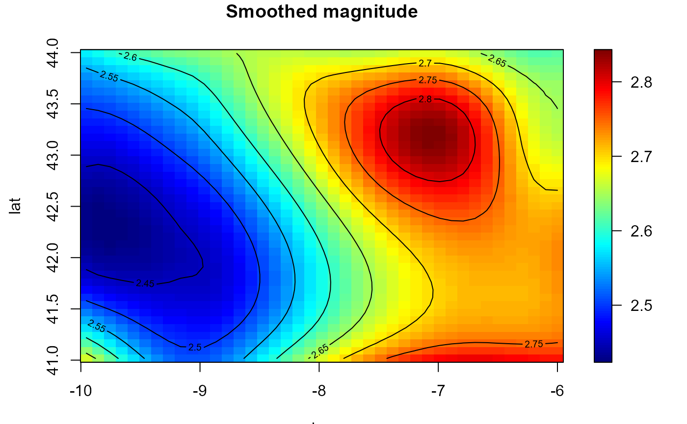
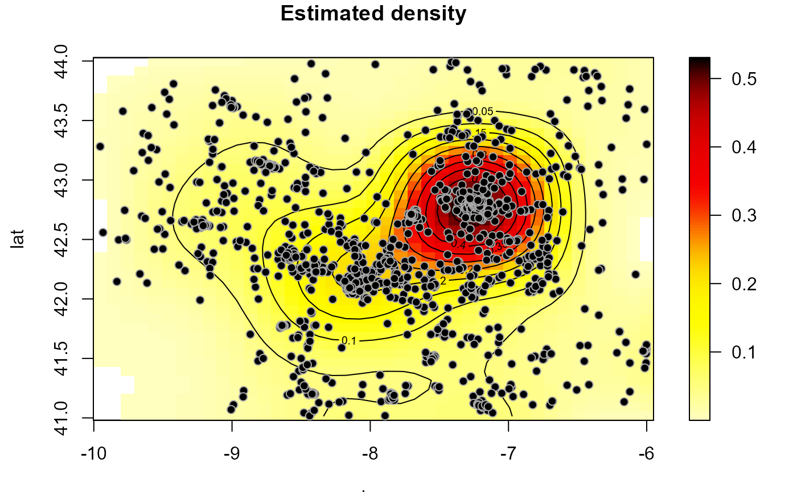

Estimates a multidimensional regression function (and its first derivatives) using local polynomial kernel smoothing (and linear binning).
locpol(x, ...) # S3 method for default locpol( x, y, h = NULL, nbin = NULL, degree = 1 + as.numeric(drv), drv = FALSE, hat.bin = FALSE, ncv = 0, set.NA = FALSE, ... ) # S3 method for bin.data locpol( x, h = NULL, degree = 1 + as.numeric(drv), drv = FALSE, hat.bin = FALSE, ncv = 0, ... ) # S3 method for svar.bin locpol(x, h = NULL, degree = 1, drv = FALSE, hat.bin = TRUE, ncv = 0, ...) # S3 method for bin.den locpol(x, h = NULL, degree = 1 + as.numeric(drv), drv = FALSE, ncv = 0, ...) locpolhcv( x, y, nbin = NULL, objective = c("CV", "GCV", "MASE"), degree = 1 + as.numeric(drv), drv = FALSE, hat.bin = FALSE, set.NA = FALSE, ncv = ifelse(objective == "CV", 2, 0), cov.dat = NULL, ... )
| x | a (data) object used to select a method. |
|---|---|
| ... | further arguments passed to or from other methods (e.g. to |
| y | vector of data (response variable). |
| h | (full) bandwidth matrix (controls the degree of smoothing; only the upper triangular part of h is used). |
| nbin | vector with the number of bins on each dimension. |
| degree | degree of the local polynomial used. Defaults to 1 (local linear estimation). |
| drv | logical; if |
| hat.bin | logical; if |
| ncv | integer; determines the number of cells leaved out in each dimension. Defaults to 0 (the full data is used) and it is not normally changed by the user in this setting. See "Details" below. |
| set.NA | logical. If |
| objective | character; optimal criterion to be used ("CV", "GCV" or "MASE"). |
| cov.dat | covariance matrix of the data or semivariogram model
(of class extending |
Returns an S3 object of class locpol.bin (locpol + bin data + grid par.).
A bin.data object with the additional (some optional) 3 components:
vector or array (dimension nbin) with the local polynomial estimates.
a list with 7 components:
degree degree of the polinomial.
h bandwidth matrix.
rm residual mean.
rss sum of squared residuals.
ncv number of cells ignored in each direction.
hat (if requested) hat matrix of the binned data.
nrl0 (if appropriate) number of cells with data (binw > 0)
and missing estimate (est == NA).
(if requested) matrix of first derivatives.
Standard generic function with a default method (interface to the
fortran routine lp_raw), in which argument x
is a vector or matrix of covariates (e.g. spatial coordinates).
If parameter nbin is not specified is set to pmax(25, rule.binning(x)).
A multiplicative triweight kernel is used to compute the weights.
If ncv > 0, estimates are computed by leaving out cells with indexes within
the intervals \([x_i - ncv + 1, x_i + ncv - 1]\), at each dimension i, where \(x\)
denotes the index of the estimation position. \(ncv = 1\) corresponds with
traditional cross-validation and \(ncv > 1\) with modified CV
(see e.g. Chu and Marron, 1991, for the one dimensional case).
Setting set.NA = TRUE (equivalent to biny[binw == 0] <- NA)
may be useful for plotting the binned averages $biny
(the hat matrix should be handled with care).
locpolhcv calls hcv.data to obtain an "optimal"
bandwith (additional arguments ... are passed to this function).
Argument ncv is only used here at the bandwith
selection stage (estimation is done with all the data).
Chu, C.K. and Marron, J.S. (1991) Comparison of Two Bandwidth Selectors with Dependent Errors. The Annals of Statistics, 19, 1906-1918.
Rupert D. and Wand M.P. (1994) Multivariate locally weighted least squares regression. The Annals of Statistics, 22, 1346-1370.
lp <- locpol(earthquakes[, c("lon", "lat")], earthquakes$mag, h = diag(2, 2), nbin = c(41,41)) simage(lp, main = "Smoothed magnitude")bin <- binning(earthquakes[, c("lon", "lat")], earthquakes$mag, nbin = c(41,41)) lp2 <- locpol(bin, h = diag(2, 2)) all.equal(lp, lp2)#> [1] TRUE## Alternatively: ## lp <- locpolhcv(earthquakes[, c("lon", "lat")], earthquakes$mag, ncv = 4) den <- locpol(as.bin.den(bin), h = diag(1, 2)) plot(den, log = FALSE, main = 'Estimated density')